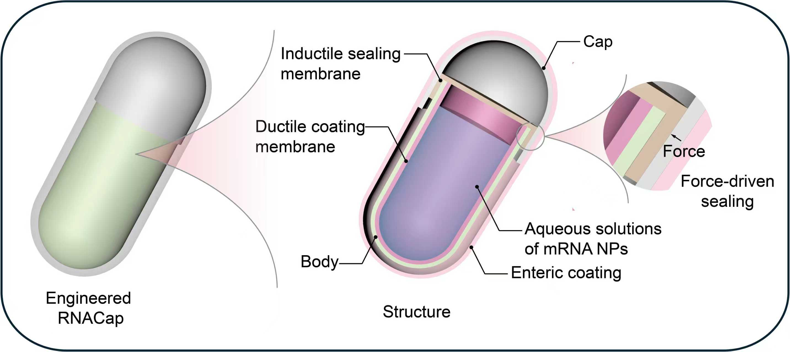
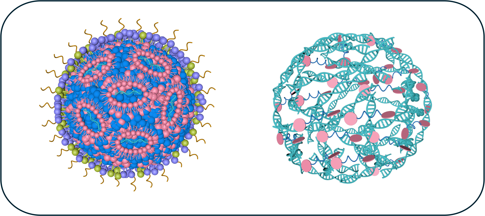

Welcome to the Huang lab at SJTU!
Our lab is at the forefront of medical innovation, pioneering next-generation oral delivery devices and RNA therapeutics (e.g., mRNA, siRNA). We envision a future where complex biologics, including mRNA vaccines and therapeutics, can be administered safely and efficiently without injections, transforming patient care worldwide. By integrating advanced biomaterials, nanotechnology, and translational research, our team aims to create scalable, non-invasive solutions that redefine how medicines are delivered and accelerate global access to life-saving therapies.
Research
Devices and platforms for oral nucleic acids (mRNA, siRNA) delivery

Designing novel oral delivery devices for RNA and other complex biologics-based therapies.

Developing next-generation mRNA and siRNA therapies for better therapeutic outcomes.